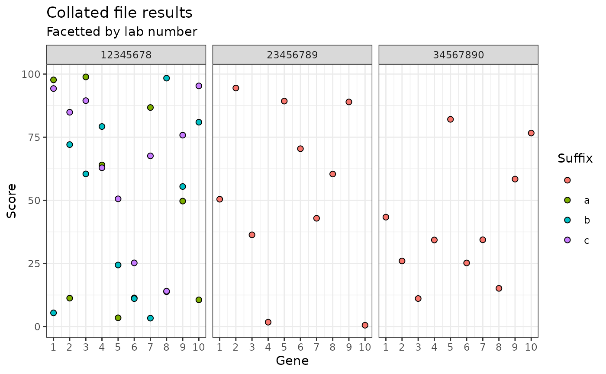

Reading files with labno2
reading-files.Rmd
library(labno2)
library(readr)
library(purrr)
library(ggplot2)
library(dplyr)
#>
#> Attaching package: 'dplyr'
#> The following objects are masked from 'package:stats':
#>
#> filter, lag
#> The following objects are masked from 'package:base':
#>
#> intersect, setdiff, setequal, unionThe problem
There are multiple files with genetic results in, and the sample identifiers are only in the filenames.
files <- list.files(path = "data/",
pattern = ".*.csv",
full.names = TRUE)
files
#> [1] "data//WS123456_12345678a_PierreBEZUKHOV.csv"
#> [2] "data//WS123456_12345678b_PierreBEZUKHOV.csv"
#> [3] "data//WS123456_12345678c_PierreBEZUKHOV.csv"
#> [4] "data//WS123456_23456789_AnnaKARENINA.csv"
#> [5] "data//WS123456_34567890_IvanILYCH.csv"Each file consists of results for different genes.
For the purpose of this example, I have randomly generated a “score” for each gene. This is not real clinical data.
#> # A tibble: 10 × 2
#> gene score
#> <chr> <dbl>
#> 1 gene1 97.7
#> 2 gene2 11.3
#> 3 gene3 98.9
#> 4 gene4 64.0
#> 5 gene5 3.49
#> 6 gene6 11.4
#> 7 gene7 86.8
#> 8 gene8 13.8
#> 9 gene9 49.7
#> 10 gene10 10.6I want to get all the results into one dataframe, along with all the relevant identifiers.
The solution
I can do this for a single file using the read_csv_ids
function from labno2.
read_csv_ids(files[1])
#> Rows: 10 Columns: 2
#> ── Column specification ────────────────────────────────────────────────────────
#> Delimiter: ","
#> chr (1): gene
#> dbl (1): score
#>
#> ℹ Use `spec()` to retrieve the full column specification for this data.
#> ℹ Specify the column types or set `show_col_types = FALSE` to quiet this message.
#> # A tibble: 10 × 9
#> gene score filepath filename labno suffix worksheet labno_suffix
#> <chr> <dbl> <chr> <chr> <chr> <chr> <chr> <chr>
#> 1 gene1 97.7 data//WS123456_123… WS12345… 1234… a WS123456 12345678a
#> 2 gene2 11.3 data//WS123456_123… WS12345… 1234… a WS123456 12345678a
#> 3 gene3 98.9 data//WS123456_123… WS12345… 1234… a WS123456 12345678a
#> 4 gene4 64.0 data//WS123456_123… WS12345… 1234… a WS123456 12345678a
#> 5 gene5 3.49 data//WS123456_123… WS12345… 1234… a WS123456 12345678a
#> 6 gene6 11.4 data//WS123456_123… WS12345… 1234… a WS123456 12345678a
#> 7 gene7 86.8 data//WS123456_123… WS12345… 1234… a WS123456 12345678a
#> 8 gene8 13.8 data//WS123456_123… WS12345… 1234… a WS123456 12345678a
#> 9 gene9 49.7 data//WS123456_123… WS12345… 1234… a WS123456 12345678a
#> 10 gene10 10.6 data//WS123456_123… WS12345… 1234… a WS123456 12345678a
#> # ℹ 1 more variable: labno_suffix_worksheet <chr>Using map from purrr I can then iterate
this function over the file list and bind the data together.
all_data <- files |>
map(\(files) read_csv_ids(files)) |>
list_rbind() |>
mutate(gene_number = parse_number(gene))
#> Rows: 10 Columns: 2
#> ── Column specification ────────────────────────────────────────────────────────
#> Delimiter: ","
#> chr (1): gene
#> dbl (1): score
#>
#> ℹ Use `spec()` to retrieve the full column specification for this data.
#> ℹ Specify the column types or set `show_col_types = FALSE` to quiet this message.
#> Rows: 10 Columns: 2
#> ── Column specification ────────────────────────────────────────────────────────
#> Delimiter: ","
#> chr (1): gene
#> dbl (1): score
#>
#> ℹ Use `spec()` to retrieve the full column specification for this data.
#> ℹ Specify the column types or set `show_col_types = FALSE` to quiet this message.
#> Rows: 10 Columns: 2
#> ── Column specification ────────────────────────────────────────────────────────
#> Delimiter: ","
#> chr (1): gene
#> dbl (1): score
#>
#> ℹ Use `spec()` to retrieve the full column specification for this data.
#> ℹ Specify the column types or set `show_col_types = FALSE` to quiet this message.
#> Rows: 10 Columns: 2
#> ── Column specification ────────────────────────────────────────────────────────
#> Delimiter: ","
#> chr (1): gene
#> dbl (1): score
#>
#> ℹ Use `spec()` to retrieve the full column specification for this data.
#> ℹ Specify the column types or set `show_col_types = FALSE` to quiet this message.
#> Rows: 10 Columns: 2
#> ── Column specification ────────────────────────────────────────────────────────
#> Delimiter: ","
#> chr (1): gene
#> dbl (1): score
#>
#> ℹ Use `spec()` to retrieve the full column specification for this data.
#> ℹ Specify the column types or set `show_col_types = FALSE` to quiet this message.This gives me the data in a single dataframe with each row annotated with the correct sample identifiers.
| gene | score | filepath | filename | labno | suffix | worksheet | labno_suffix | labno_suffix_worksheet | gene_number |
|---|---|---|---|---|---|---|---|---|---|
| gene1 | 97.6955141 | data//WS123456_12345678a_PierreBEZUKHOV.csv | WS123456_12345678a_PierreBEZUKHOV.csv | 12345678 | a | WS123456 | 12345678a | 12345678a_WS123456 | 1 |
| gene2 | 11.2687355 | data//WS123456_12345678a_PierreBEZUKHOV.csv | WS123456_12345678a_PierreBEZUKHOV.csv | 12345678 | a | WS123456 | 12345678a | 12345678a_WS123456 | 2 |
| gene3 | 98.8593290 | data//WS123456_12345678a_PierreBEZUKHOV.csv | WS123456_12345678a_PierreBEZUKHOV.csv | 12345678 | a | WS123456 | 12345678a | 12345678a_WS123456 | 3 |
| gene4 | 64.0114902 | data//WS123456_12345678a_PierreBEZUKHOV.csv | WS123456_12345678a_PierreBEZUKHOV.csv | 12345678 | a | WS123456 | 12345678a | 12345678a_WS123456 | 4 |
| gene5 | 3.4885046 | data//WS123456_12345678a_PierreBEZUKHOV.csv | WS123456_12345678a_PierreBEZUKHOV.csv | 12345678 | a | WS123456 | 12345678a | 12345678a_WS123456 | 5 |
| gene6 | 11.3642443 | data//WS123456_12345678a_PierreBEZUKHOV.csv | WS123456_12345678a_PierreBEZUKHOV.csv | 12345678 | a | WS123456 | 12345678a | 12345678a_WS123456 | 6 |
| gene7 | 86.7547998 | data//WS123456_12345678a_PierreBEZUKHOV.csv | WS123456_12345678a_PierreBEZUKHOV.csv | 12345678 | a | WS123456 | 12345678a | 12345678a_WS123456 | 7 |
| gene8 | 13.8269989 | data//WS123456_12345678a_PierreBEZUKHOV.csv | WS123456_12345678a_PierreBEZUKHOV.csv | 12345678 | a | WS123456 | 12345678a | 12345678a_WS123456 | 8 |
| gene9 | 49.7064066 | data//WS123456_12345678a_PierreBEZUKHOV.csv | WS123456_12345678a_PierreBEZUKHOV.csv | 12345678 | a | WS123456 | 12345678a | 12345678a_WS123456 | 9 |
| gene10 | 10.6104016 | data//WS123456_12345678a_PierreBEZUKHOV.csv | WS123456_12345678a_PierreBEZUKHOV.csv | 12345678 | a | WS123456 | 12345678a | 12345678a_WS123456 | 10 |
| gene1 | 5.4439993 | data//WS123456_12345678b_PierreBEZUKHOV.csv | WS123456_12345678b_PierreBEZUKHOV.csv | 12345678 | b | WS123456 | 12345678b | 12345678b_WS123456 | 1 |
| gene2 | 72.0719737 | data//WS123456_12345678b_PierreBEZUKHOV.csv | WS123456_12345678b_PierreBEZUKHOV.csv | 12345678 | b | WS123456 | 12345678b | 12345678b_WS123456 | 2 |
| gene3 | 60.4684200 | data//WS123456_12345678b_PierreBEZUKHOV.csv | WS123456_12345678b_PierreBEZUKHOV.csv | 12345678 | b | WS123456 | 12345678b | 12345678b_WS123456 | 3 |
| gene4 | 79.2336205 | data//WS123456_12345678b_PierreBEZUKHOV.csv | WS123456_12345678b_PierreBEZUKHOV.csv | 12345678 | b | WS123456 | 12345678b | 12345678b_WS123456 | 4 |
| gene5 | 24.4005622 | data//WS123456_12345678b_PierreBEZUKHOV.csv | WS123456_12345678b_PierreBEZUKHOV.csv | 12345678 | b | WS123456 | 12345678b | 12345678b_WS123456 | 5 |
| gene6 | 11.0944414 | data//WS123456_12345678b_PierreBEZUKHOV.csv | WS123456_12345678b_PierreBEZUKHOV.csv | 12345678 | b | WS123456 | 12345678b | 12345678b_WS123456 | 6 |
| gene7 | 3.3582193 | data//WS123456_12345678b_PierreBEZUKHOV.csv | WS123456_12345678b_PierreBEZUKHOV.csv | 12345678 | b | WS123456 | 12345678b | 12345678b_WS123456 | 7 |
| gene8 | 98.3774984 | data//WS123456_12345678b_PierreBEZUKHOV.csv | WS123456_12345678b_PierreBEZUKHOV.csv | 12345678 | b | WS123456 | 12345678b | 12345678b_WS123456 | 8 |
| gene9 | 55.4686784 | data//WS123456_12345678b_PierreBEZUKHOV.csv | WS123456_12345678b_PierreBEZUKHOV.csv | 12345678 | b | WS123456 | 12345678b | 12345678b_WS123456 | 9 |
| gene10 | 80.9327019 | data//WS123456_12345678b_PierreBEZUKHOV.csv | WS123456_12345678b_PierreBEZUKHOV.csv | 12345678 | b | WS123456 | 12345678b | 12345678b_WS123456 | 10 |
| gene1 | 94.2702363 | data//WS123456_12345678c_PierreBEZUKHOV.csv | WS123456_12345678c_PierreBEZUKHOV.csv | 12345678 | c | WS123456 | 12345678c | 12345678c_WS123456 | 1 |
| gene2 | 84.8811300 | data//WS123456_12345678c_PierreBEZUKHOV.csv | WS123456_12345678c_PierreBEZUKHOV.csv | 12345678 | c | WS123456 | 12345678c | 12345678c_WS123456 | 2 |
| gene3 | 89.4712796 | data//WS123456_12345678c_PierreBEZUKHOV.csv | WS123456_12345678c_PierreBEZUKHOV.csv | 12345678 | c | WS123456 | 12345678c | 12345678c_WS123456 | 3 |
| gene4 | 62.9010040 | data//WS123456_12345678c_PierreBEZUKHOV.csv | WS123456_12345678c_PierreBEZUKHOV.csv | 12345678 | c | WS123456 | 12345678c | 12345678c_WS123456 | 4 |
| gene5 | 50.5924463 | data//WS123456_12345678c_PierreBEZUKHOV.csv | WS123456_12345678c_PierreBEZUKHOV.csv | 12345678 | c | WS123456 | 12345678c | 12345678c_WS123456 | 5 |
| gene6 | 25.2354199 | data//WS123456_12345678c_PierreBEZUKHOV.csv | WS123456_12345678c_PierreBEZUKHOV.csv | 12345678 | c | WS123456 | 12345678c | 12345678c_WS123456 | 6 |
| gene7 | 67.6015973 | data//WS123456_12345678c_PierreBEZUKHOV.csv | WS123456_12345678c_PierreBEZUKHOV.csv | 12345678 | c | WS123456 | 12345678c | 12345678c_WS123456 | 7 |
| gene8 | 14.0432803 | data//WS123456_12345678c_PierreBEZUKHOV.csv | WS123456_12345678c_PierreBEZUKHOV.csv | 12345678 | c | WS123456 | 12345678c | 12345678c_WS123456 | 8 |
| gene9 | 75.8114634 | data//WS123456_12345678c_PierreBEZUKHOV.csv | WS123456_12345678c_PierreBEZUKHOV.csv | 12345678 | c | WS123456 | 12345678c | 12345678c_WS123456 | 9 |
| gene10 | 95.3160182 | data//WS123456_12345678c_PierreBEZUKHOV.csv | WS123456_12345678c_PierreBEZUKHOV.csv | 12345678 | c | WS123456 | 12345678c | 12345678c_WS123456 | 10 |
| gene1 | 50.4452151 | data//WS123456_23456789_AnnaKARENINA.csv | WS123456_23456789_AnnaKARENINA.csv | 23456789 | WS123456 | 23456789 | 23456789_WS123456 | 1 | |
| gene2 | 94.4651708 | data//WS123456_23456789_AnnaKARENINA.csv | WS123456_23456789_AnnaKARENINA.csv | 23456789 | WS123456 | 23456789 | 23456789_WS123456 | 2 | |
| gene3 | 36.3450093 | data//WS123456_23456789_AnnaKARENINA.csv | WS123456_23456789_AnnaKARENINA.csv | 23456789 | WS123456 | 23456789 | 23456789_WS123456 | 3 | |
| gene4 | 1.7642395 | data//WS123456_23456789_AnnaKARENINA.csv | WS123456_23456789_AnnaKARENINA.csv | 23456789 | WS123456 | 23456789 | 23456789_WS123456 | 4 | |
| gene5 | 89.2965208 | data//WS123456_23456789_AnnaKARENINA.csv | WS123456_23456789_AnnaKARENINA.csv | 23456789 | WS123456 | 23456789 | 23456789_WS123456 | 5 | |
| gene6 | 70.4437311 | data//WS123456_23456789_AnnaKARENINA.csv | WS123456_23456789_AnnaKARENINA.csv | 23456789 | WS123456 | 23456789 | 23456789_WS123456 | 6 | |
| gene7 | 42.9037774 | data//WS123456_23456789_AnnaKARENINA.csv | WS123456_23456789_AnnaKARENINA.csv | 23456789 | WS123456 | 23456789 | 23456789_WS123456 | 7 | |
| gene8 | 60.4224573 | data//WS123456_23456789_AnnaKARENINA.csv | WS123456_23456789_AnnaKARENINA.csv | 23456789 | WS123456 | 23456789 | 23456789_WS123456 | 8 | |
| gene9 | 88.9575026 | data//WS123456_23456789_AnnaKARENINA.csv | WS123456_23456789_AnnaKARENINA.csv | 23456789 | WS123456 | 23456789 | 23456789_WS123456 | 9 | |
| gene10 | 0.5565599 | data//WS123456_23456789_AnnaKARENINA.csv | WS123456_23456789_AnnaKARENINA.csv | 23456789 | WS123456 | 23456789 | 23456789_WS123456 | 10 | |
| gene1 | 43.3481782 | data//WS123456_34567890_IvanILYCH.csv | WS123456_34567890_IvanILYCH.csv | 34567890 | WS123456 | 34567890 | 34567890_WS123456 | 1 | |
| gene2 | 25.9921850 | data//WS123456_34567890_IvanILYCH.csv | WS123456_34567890_IvanILYCH.csv | 34567890 | WS123456 | 34567890 | 34567890_WS123456 | 2 | |
| gene3 | 11.1211967 | data//WS123456_34567890_IvanILYCH.csv | WS123456_34567890_IvanILYCH.csv | 34567890 | WS123456 | 34567890 | 34567890_WS123456 | 3 | |
| gene4 | 34.3106907 | data//WS123456_34567890_IvanILYCH.csv | WS123456_34567890_IvanILYCH.csv | 34567890 | WS123456 | 34567890 | 34567890_WS123456 | 4 | |
| gene5 | 82.0752608 | data//WS123456_34567890_IvanILYCH.csv | WS123456_34567890_IvanILYCH.csv | 34567890 | WS123456 | 34567890 | 34567890_WS123456 | 5 | |
| gene6 | 25.2085669 | data//WS123456_34567890_IvanILYCH.csv | WS123456_34567890_IvanILYCH.csv | 34567890 | WS123456 | 34567890 | 34567890_WS123456 | 6 | |
| gene7 | 34.3805890 | data//WS123456_34567890_IvanILYCH.csv | WS123456_34567890_IvanILYCH.csv | 34567890 | WS123456 | 34567890 | 34567890_WS123456 | 7 | |
| gene8 | 15.1524318 | data//WS123456_34567890_IvanILYCH.csv | WS123456_34567890_IvanILYCH.csv | 34567890 | WS123456 | 34567890 | 34567890_WS123456 | 8 | |
| gene9 | 58.4151974 | data//WS123456_34567890_IvanILYCH.csv | WS123456_34567890_IvanILYCH.csv | 34567890 | WS123456 | 34567890 | 34567890_WS123456 | 9 | |
| gene10 | 76.6390498 | data//WS123456_34567890_IvanILYCH.csv | WS123456_34567890_IvanILYCH.csv | 34567890 | WS123456 | 34567890 | 34567890_WS123456 | 10 |
Then I can explore this collated data using ggplot2.

The rationale
labno2 is designed to help me do exploratory data
analysis on multiple files quickly and reproducibly. It is built around
tidyverse packages including stringr,
readr and dplyr.
labno2 aims to include functionality which is shared
across multiple projects that I do. This is shown in the above example:
a common problem is collating data from files which include identifiers
in the filenames with a consistent format for worksheet, lab number and
suffix.
What about extracting patient names?
There is currently no function for extracting patient names in
labno2 for the following reasons:
Patient names are not always included in filenames. If data is analysed on the cloud, then patient names are removed from filenames, which means you can have files with a mixture of patient names and no patient names depending on how they were processed.
Not all samples are from people. Some samples are control samples, such as mixtures of different DNA samples or cell lines. These samples may be given a “name” or they may not, and the name may or may not follow the standard format of “forename surname”. Example: “HorizonPositiveControl”.
Some samples may be for research. Patient samples collected for research will be anonymised, and the research identifier may be included in place of the sample name. The research identifier may also include numbers or other non-letter characters. Example: “study0001”
These reasons mean that designing a regular expression to identify a patient name in a filename is complicated. One option is to use the position of the name in the string relative to more consistent identifiers, like lab number and worksheet number, but this is then inflexible when the order of identifiers changes.